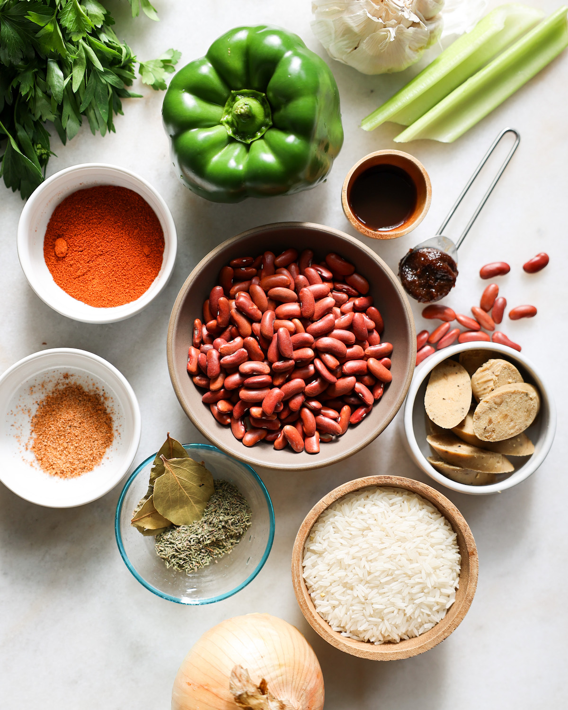
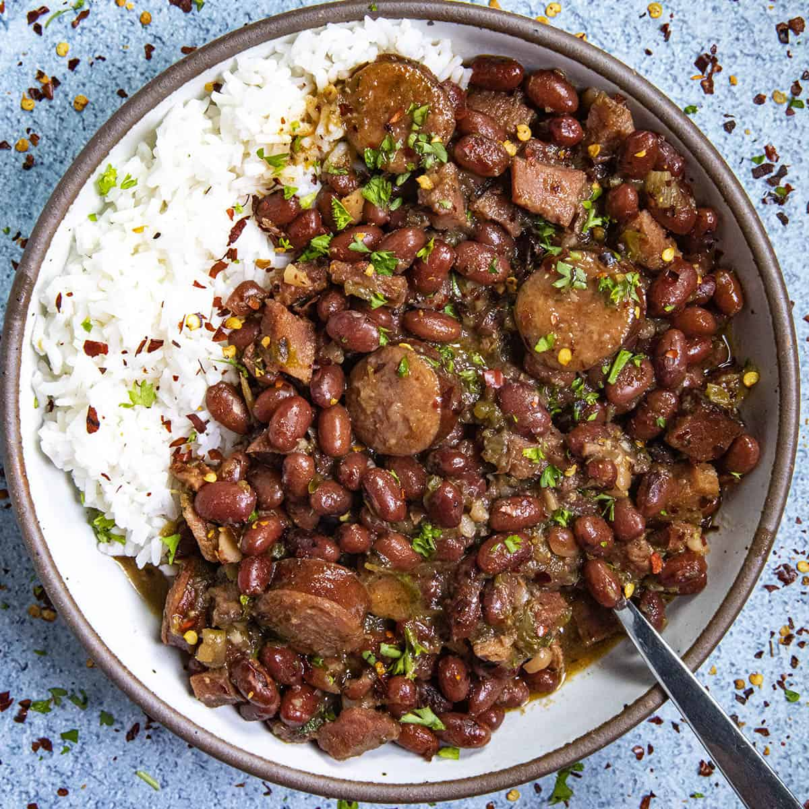
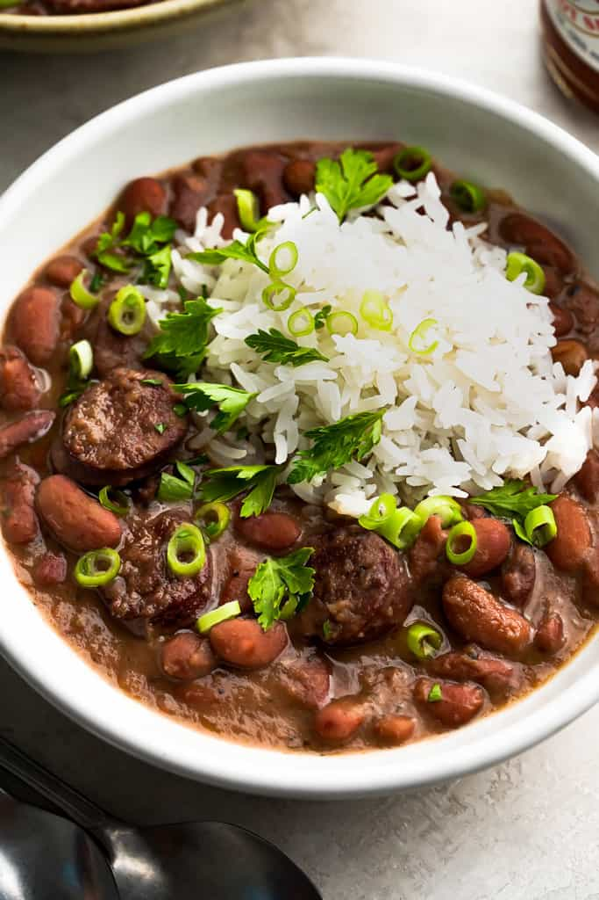

Rice with Beans Recipe
Home
Biriani
Pilau
Chinese Food
How to Cook Rice with Beans
Details on how to cook Rice with Beans...
Ingredients:
1 cup rice
1 cup cooked beans (black beans, kidney beans, or chickpeas)
1 tablespoon cooking oil
1 small onion, chopped
1 garlic clove, minced
1 bell pepper, diced
teaspoon cumin
1 teaspoon paprika
2 cups vegetable or chicken broth
Salt and pepper to taste

Instructions:
Rinse the rice and set aside
Heat oil in a pot, sauté the onion and garlic until translucent
Add the bell pepper and cook for a few minutes
Stir in the cumin and paprika
Add the rice and mix well
Pour in the broth and bring to a boil
Reduce heat to low, cover, and cook for 15 minutes or until the rice is tender and the broth is absorbed
Gently stir in the cooked beans and heat through
 